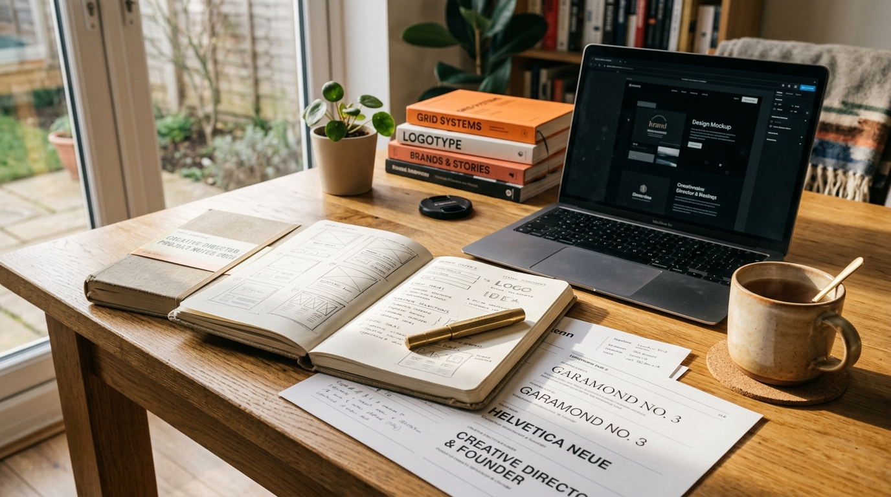

Built by a founder,
for founders.
“F&F was born from experience — building brands, shipping websites, and learning firsthand what founders actually need from a creative partner. We've been on the other side of the table. That's what shapes how we work now: less noise, more form.”
We started Form & Founder out of a quiet frustration with the traditional agency model. Too many creative firms operate as bureaucratic machines: layers of account managers, weeks spent on abstract slide presentations, and final deliverables that look identical to the latest Silicon Valley trend.
We believe founders deserve a partner who operates with equal intensity, clear conviction, and direct accountability.

Why Form & Founder?
The name encapsulates the two essential elements required to build an enduring enterprise.
The Vision & Conviction
You carry the original insight, the market intuition, and the risk. You see a future that does not yet exist and possess the drive to bring it into reality.
The Expression & Medium
Our discipline is extracting that raw vision and shaping it into cohesive typography, enduring brand identity, editorial web design, and published literature that commands authority.
Four core principles that shape our work.
Standards we hold ourselves to on every engagement.
Intentionality over Novelty
We don't chase fleeting design fads that look outdated in six months. Every typeface choice, color value, and layout structure is chosen with deliberate strategic purpose.
Quiet Confidence over Noise
The strongest brands don't need to shout. We favor understated editorial elegance, generous whitespace, and typography that allows the founder's message to shine.
Founder Empathy in Action
Having founded and scaled businesses ourselves, we understand budget realities, launch deadlines, and the pressure to produce commercial results. We operate with zero ego.
Enduring Craft
Whether writing semantic HTML code, setting margins on a printed book page, or kerning a custom wordmark, we hold our craft to the standard of master typographers and artisans.
Rooted in Nigeria.
Partnering worldwide.
Operating from Ilorin and Lagos, we bring a rich, global perspective to founders everywhere. We collaborate seamlessly across continents and time zones.
Creative Practice & Publishing
Digital & Venture Partnerships
UK • US • Europe • Africa
Ready to build something enduring?
We welcome conversations with founders at any stage of their journey. Let's discuss your next chapter.
Start a project →